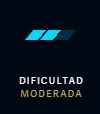

Resumen
Lee Sin, maestro de las artes marciales ancestrales de Jonia, es un luchador con principios que canaliza la esencia del espíritu del dragón para enfrentarse a cualquier desafío. Aunque perdió la vista hace muchos años, el monje guerrero ha dedicado su vida a proteger su hogar contra cualquiera que se atreva a alterar su sagrado equilibrio. Los enemigos que subestiman su actitud meditativa tendrán que vérselas con sus legendarios puños ardientes y sus fulgurantes patadas giratorias.
